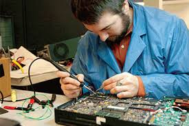

Computer hardware engineers work with the components that make up a computer such as processors, motherboards, memory devices, storage, cases, power supply, networks, and routers. They research these components so they can work on designing and developing more advanced, useful, pieces of technology, giving the computer the ability to integrate new features. They also test the parts they developed to make sure they’re user friendly, and do what they are intended to do.
Salary can range from $40 000 - $125 000 depending on how high your education is, and your experience in the field. The average salary for a computer hardware engineer is $65 000 - $90 000 a year. When you’re beginning your career in this profession, you lean more towards the $40 000 - $65 000 salary, but more advanced, experienced engineers lean more towards the $125 000 salary.
To get into a decent University, you need to get at least 70% in...
Once you're out of University, you need to have at least a bachelors degree in computer engineering.
The work environment would be in an office, my house, and other place similar to those. If I had to discuss what I was working on with other people I could use Skype, or call them to arrange online meetings.
I think being a computer hardware engineer is awesome! Both of my parents are engineers, so I knew I had to be one too. My dream job would be something to do with computers, and the gaming industry. I’ve been in love with virtual reality technology ever since I found out about it. Computer hardware engineers get to design, develop, and test gear like the Oculus Rift, and the Virtuix Omni, which is something I’m highly interested in. I’m a straight A student and know I wouldn’t have many issues getting the required grades to get into Waterloo (my ideal University). I like to read, play problem solving games, do math for fun, enjoy learning about science, have a high interest in technology and design. I am very happy with the fact that you don't have to travel for work often. I don't like travelling often, and I like to be in the comfort of my own home with the people I love. I don't mind potentially working late hours. Once I've started a project, it's hard for me to stop working on it anyways, so I find that I'd probably be staying up later anyways.